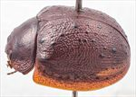
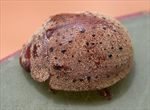
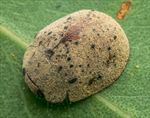
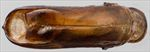
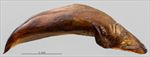
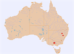

Click on images to enlarge


Female, Bylong, New South Wales


Female, Bylong, New South Wales


Male, Pilliga State Forest, New South Wales


Aedeagus, dorsal view (Mount Ida, Victoria)


Aedeagus, lateral view (Mount Ida, Victoria)


Distribution
Name
Trachymela inops (Blackburn)
Reference specimen
PGK/5087a, Mount Ida, Victoria.
Adult Description
Length: ♂ 7.6–8.8 mm (n=5), ♀ 8.5-10.0 mm (n=5).
Colouration:
- Head: uniformly mid- to dark-brown, sometimes with some black along fronto-clypeal suture near antennal insertions, labrum yellow-brown, mandibles brown with black tips; antennomeres 1–5 light-brown, 6–11 grading towards a slightly darker shade, with the distal extremes of segments usually dark-brown.
- Pronotum: brown, concolorous with head, often with vague dark markings on disc, a small round dark (even black) macula in foveal areas is usually present, lateral (and sometimes, parts of anterior) margination dark-brown or black.
- Scutellum: brown, concolorous with adjacent area of pronotum, usually edged in darker brown.
- Elytra: brown, concolorous with pronotum, with small, round but black and prominently elevated verrucae sparingly scattered and quite evenly across disc and into marginal area with the largest of these being no more than about 4 pd in diameter, some longitudinal alignments of these are present, including one series in posterior half and spaced a short distance from suture, humeral callus dark-brown or black.
- Venter & Legs: head brown, with gula sometimes at least partially black, prosternal process brown with rest of prosternum black, mesoventrite and anterior margin of metaventrite dark-brown or black, elsewhere brown to dark-brown, sometimes with lighter patches, legs brown, epipleura brown.
- Cuticular Wax: light-brown, sparsely to relatively densely but very evenly distributed layer, making a clear contrast with the black verrucae.
Morphology:
- Head: punctures quite small (pd ≈ 1.5 × ef), and rather evenly and densely distributed. Antennae moderately long (AL/BL: ♂ 41–43%, ♀ 34-37%), filiform.
- Pronotum: almost evenly curved transversely to foveal area, then noticeably, sometimes quite strongly, explanate at margins, foveal depression shallow to deep, usually with a very slightly elevated round callus at its centre that may be black and so more conspicuous, discal surface usually finely wrinkled with individual punctures somewhat obsolete and difficult to discern, sometimes disc is smoother and punctures more clearly impressed, then relatively fine, similar or fractionally smaller than on head, and evenly and densely distributed, becoming considerably coarser at lateral margins; front margins join thinner lateral margins in a smoothly rounded right-angle, with lateral margin curving smoothly and gradually towards rear margin, becoming much thicker in posterior half.
- Scutellum: surface smooth and nitid or slightly roughened, unpunctured.
- Elytra: surface evenly curved longitudinally, curved quite evenly transversely, sometimes with a very slight explanation near margins, punctures closely and evenly distributed with convex interstices, much smaller punctures are scattered sparingly on the interstices; small (diameter 1–4 pd), round, prominently elevated verrucae, some with a fine central puncture, are scattered over the surface of disc, elytral suture not carinate, posterior half of marginal area slightly concave, surface continuous under humeral callus; vertical extension of epipleura considerable (HCE/PW = 0.38–0.41).
- Venter: prosternal process almost parallel-sided, sometimes narrowing anteriorly, open or lightly closed anteriorly, with a very light scatter of short setae throughout, mesoventrite with a few short setae, a single seta usually present on anterior and median trochanter; front edge of metaventrite beveled, truncate.
Male Genitalia (Aedeagus):
- Dimensions: long (LPE/BL = 40–44%).
- Dorsal view: shaft almost parallel-sided from basal sulcus for about half of length, then sides diverge very slightly to widest point at about 25% of distance from apex, from where sides converge in a smoothly rounded arc, dorsal surface with a well-defined dorso-median channel, dorsolateral channels long, tip protruding slightly and smoothly rounded, ostium large with dorsal ostial processes protruding deep into it.
- Lateral view: ventral surface of shaft almost straight in central section, then curved downward near apex, tip deflexed, flagellum very thin.
Immature Stages
Unknown.
Similar species
- Ta02: this species is very similar in overall appearance, but is smaller; its verrucae are much less elevated than those of Ta169 and usually more densely distributed.
- Ta167: a similar-sized species scattered with small black verrucae on the elytral disc; it can be distinguished by its extensive black areas on the head, its black scutellum, and the black inner surface of epipleura.
Notes
- Taxonomy: Ta169 is identified as Trachymela inops (Blackburn) by comparison with the inops type specimen in the Natural History Museum, London (BMNH). Another specimen labelled T. inops in BMNH, in appearance almost identical to the type specimen, has had its aedeagus extracted. In shape and dimensions, it is almost identical to that of Ta169.
- Host Associations: Ta169 has been recorded from Eucalyptus polyanthemos (Symphyomyrtus : Adnataria).
Copyright © 2026. All rights reserved.